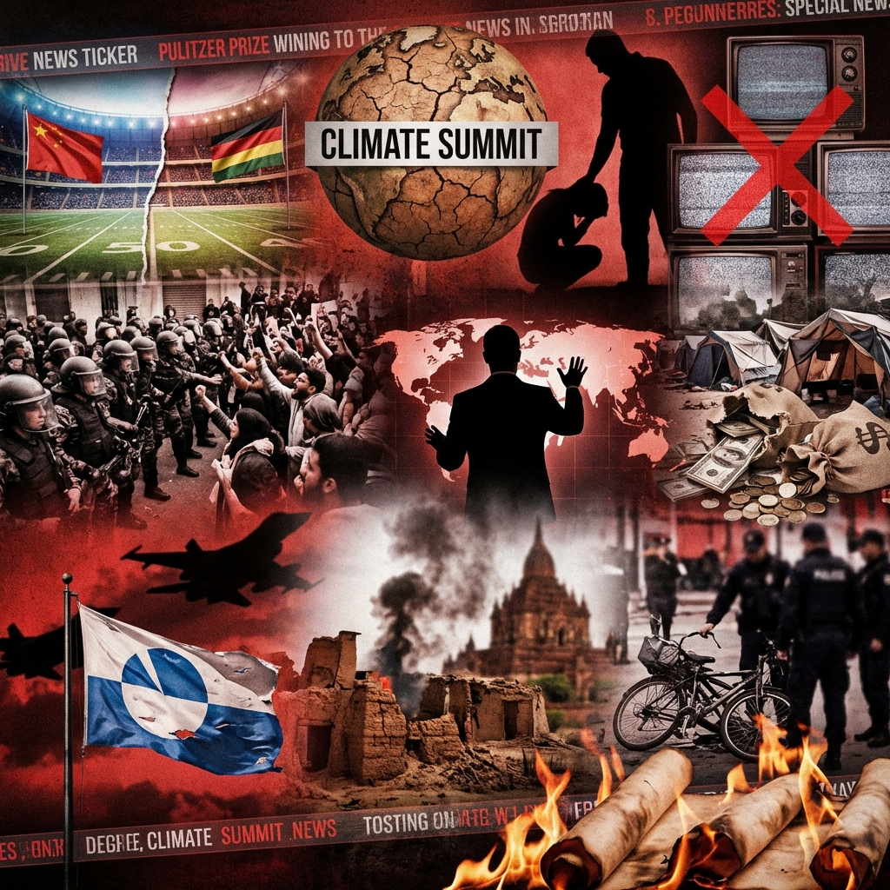

The Daily Globe: Greenland's Unified Sovereignty Declaration, Nationwide Protests Over ICE Shootings, and Palmeiras Mundial Debate
Published on 2026-01-11

World
- Greenland's Unified Sovereignty Declaration
All five major parties reject US and Danish control, igniting debates on independence and Arctic geopolitics.
- Myanmar Junta Airstrikes on Civilians
Military bombings target religious minorities ahead of sham elections, sparking UK parliamentary outrage.
- Australian 'Bike Boy' Scandal Evidence
New photo alleges police cover-up in 2013 crash involving former Premier Daniel Andrews.
- Indian Babur Book Controversy
New historical book faces backlash for 'revisionist' portrayal of Mughal era.
USA
- Nationwide Protests Over ICE Shootings
Fatal incidents in Minneapolis and Portland prompt demonstrations; bodycam footage fuels force debates.
- Trump Pushes Greenland Acquisition
'Easy or hard way' comments escalate diplomatic tensions with Denmark.
- Welfare Fraud Scandals in Blue States
Federal probes halt funds in Minnesota and California over NGO mismanagement.
- Virginia Gun Control Bills
$500 suppressor tax and semi-auto ban ignite Second Amendment backlash.
Brazil
- Palmeiras Mundial Debate
Influencers clash in fiery discussion on whether Palmeiras holds a world title.
- COP30 Polemics
Delays in climate goals and rich nations' funding spark controversies for Brazil-hosted summit.
- Violence Against Women Analysis
Podcast uncovers surprising reasons behind Brazil's high femicide rates despite gender progress.
- Bolsonaro on Child Protection
Former president hailed as defender in ongoing polarized child rights debates.
- TV Conservatism in Brazil
Criticism of Globo and open TV regressing on abortion, LGBT topics due to evangelical influence.
Topic Index
- geopolitical-tensions
- sovereignty-disputes
- military-atrocities
- political-scandals
- immigration-protests
- welfare-fraud
- gun-control
- historical-controversies